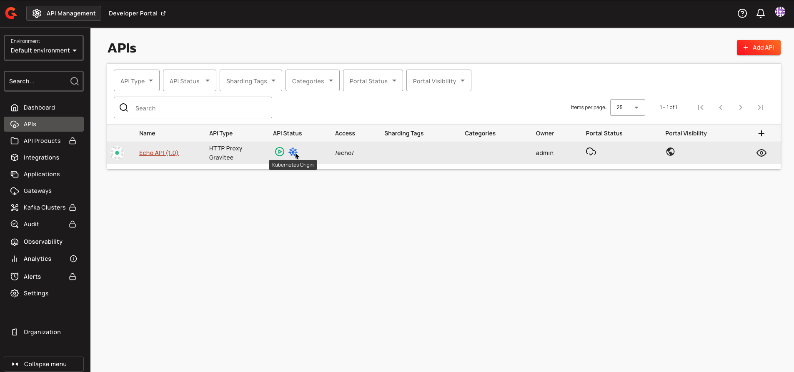
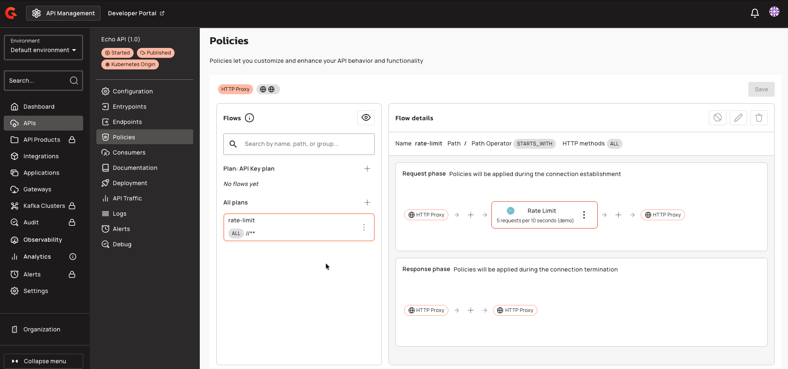
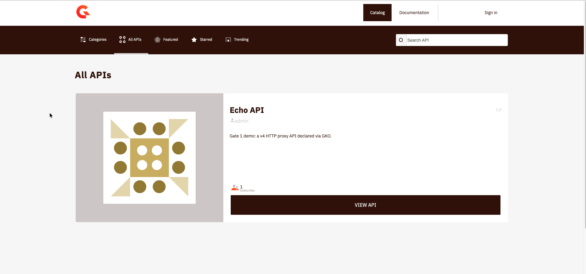
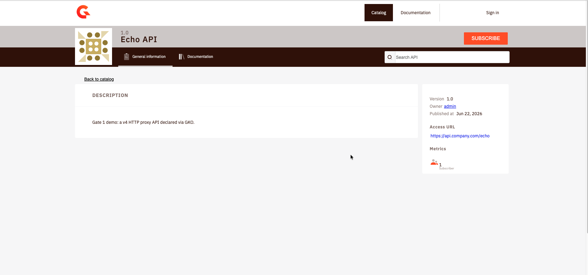
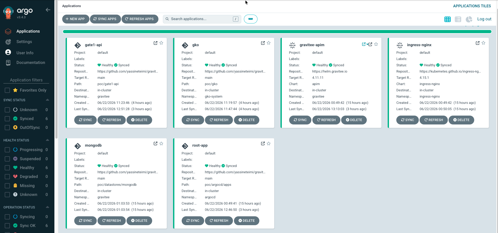

Gate 1: API Gateway
The first gate publishes a real API on the gateway and puts identity and abuse control in front of it: a Plan for authentication, a rate-limit policy, and a self-service Developer Portal. Every part of it is declared as a Kubernetes resource, reconciled by the Gravitee Kubernetes Operator (GKO) and ArgoCD, so an API ships as a reviewed commit rather than a click in a UI.
Why declare APIs with the operator
Gravitee offers four ways to define an API: the Console UI, the Management API
(scripted), the Kubernetes Operator (CRDs), and a Terraform provider. For a
GitOps-first PoC the operator is the natural fit: an ApiV4Definition is just
another manifest under the app-of-apps, reconciled like everything else, and
because GKO pushes the API into the Management API through a ManagementContext,
it still appears in the Console and Developer Portal. We get the git audit trail
and the visual surface at once.
flowchart LR
git["git: ApiV4Definition\nApplication · ManagementContext"] --> argo[ArgoCD]
argo --> gko[GKO operator]
gko -->|pushes via ManagementContext| mapi[Management API]
mapi --> mongo[(MongoDB)]
mapi --> console[Console + Portal]
mongo --> gw[API Gateway]
client[client] -->|/echo + API key| gw --> echo[echo backend]Installing the operator
GKO is added as one more ArgoCD application. One wrinkle is worth recording: the operator ships as a Go FIPS-140 build whose crypto intermittently corrupts memory and panics on this arm64 node (Apple Silicon), first in the metrics server's certificate generation, then on the webhook's TLS path. The symptom is a nonsensical runtime panic:
panic: runtime error: slice bounds out of range [:43673837399792] with capacity 32
crypto/internal/fips140/bigmod/nat.go:100
The fix is to take the operator off the FIPS path with GODEBUG=fips140=off. The
Helm chart exposes no environment knob, so the operator is installed through a
small Kustomize overlay that inflates the chart and patches the variable in:
helmCharts:
- name: gko
repo: https://helm.gravitee.io
version: 4.11.10
releaseName: gko
namespace: gko-system
valuesFile: values.yaml
patches:
- target:
kind: Deployment
name: gko-controller-manager
patch: |-
apiVersion: apps/v1
kind: Deployment
metadata:
name: gko-controller-manager
spec:
template:
spec:
containers:
- name: manager
env:
- name: GODEBUG
value: fips140=off
ArgoCD and Kustomize-with-Helm
Rendering this needs kustomize build --enable-helm, enabled once on ArgoCD
via kustomize.buildOptions: --enable-helm in the argocd-cm ConfigMap. Two
smaller gotchas followed: the repo-server's image had to move to
imagePullPolicy: IfNotPresent (a flaky registry pull on a cached image),
and the Helm values had to live in a valuesFile because valuesInline with
nested maps trips a Kustomize marshaling bug.
Connecting the operator to Gravitee
A ManagementContext tells GKO which control plane to push to. Credentials come
from a Secret injected from the gitignored .env, never committed:
apiVersion: gravitee.io/v1alpha1
kind: ManagementContext
metadata:
name: apim-context
namespace: gravitee
spec:
# host:port only, no /management suffix (GKO appends it), and the qualified
# service name because the operator runs in another namespace.
baseUrl: http://gravitee-apim-api.gravitee:83
environmentId: DEFAULT
organizationId: DEFAULT
auth:
secretRef:
name: gravitee-mgmt-context-auth
$ ./poc/scripts/inject-secrets.sh
$ kubectl get managementcontext apim-context -n gravitee \
-o jsonpath='{.status.conditions[?(@.type=="Accepted")].message}'
The first API
A tiny in-cluster echo backend keeps the demo fully local. The API itself is an
ApiV4Definition proxying gateway path /echo to that backend. Three fields the
published quickstart omits are required by the operator, and without the
flowExecution block the validating webhook panics on a nil pointer:
endpointGroups:
- name: default-group
type: http-proxy
endpoints:
- name: echo-backend
type: http-proxy
inheritConfiguration: false # required by GKO 4.11
secondary: false # required by GKO 4.11
configuration:
target: http://echo-server:80
flowExecution: # absent => webhook nil-pointer panic
mode: DEFAULT
matchRequired: false
Once committed, ArgoCD applies it, GKO reconciles it into Gravitee, and it shows up in the Console with a Kubernetes Origin badge that marks it as declared by the operator rather than clicked in the UI:

The route works end to end, and the response carries Gravitee's transaction headers, proof it passed through the gateway rather than hitting the backend directly:
$ curl -s -o /dev/null -w "%{http_code}\n" \
--resolve gateway.gravitee.local:80:127.0.0.1 http://gateway.gravitee.local/echo
Securing it: an API-key plan and a rate limit
The keyless plan is swapped for an API-key plan, and an API-level flow adds a rate-limit policy of five requests per ten seconds. Authentication runs before the flow, so an unauthenticated call is rejected before it can consume quota:
flows:
- name: rate-limit
enabled: true
selectors:
- type: HTTP
path: "/"
pathOperator: STARTS_WITH
request:
- name: Rate Limit
enabled: true
policy: rate-limit
configuration:
rate:
limit: 5
periodTime: 10
periodTimeUnit: SECONDS
plans:
API_KEY:
name: "API Key plan"
status: PUBLISHED
security:
type: API_KEY
Both are visible in the Console, the plan and the rate-limit policy on the request phase of the flow:

Enforcement, end to end: no key is rejected, a valid key passes until the limit, then the gateway returns 429.
$ KEY=$(./poc/scripts/gate1-subscribe.sh | awk '/API key:/{print $3}')
$ curl -s -o /dev/null -w "no key: %{http_code}\n" \
--resolve gateway.gravitee.local:80:127.0.0.1 http://gateway.gravitee.local/echo
$ for i in $(seq 1 8); do
curl -s -o /dev/null -w "call $i: %{http_code}\n" -H "X-Gravitee-Api-Key: $KEY" \
--resolve gateway.gravitee.local:80:127.0.0.1 http://gateway.gravitee.local/echo
done
no key: 401
call 1: 200
call 2: 200
call 3: 200
call 4: 200
call 5: 200
call 6: 429
call 7: 429
call 8: 429
The gateway also advertises the limit on every allowed response:
X-Rate-Limit-Limit: 5
X-Rate-Limit-Remaining: 4
X-Rate-Limit-Reset: 1782126240954
The consumer and its key, without committing a secret
The consumer is a GKO-declared Application, so the API, its plan, and the
consumer are all code. The subscription is the one thing that is not: GKO's
Subscription resource only accepts an API-key plan if you embed the key in the
manifest, which would commit a credential to a public repo. API keys are runtime
secrets, so a small script mints one through the Management API and prints it; the
key is never persisted to git.
Created subscription dbcd4825-51ec-4c97-8d48-2551ec7c9712
API key: 6a916794-1f07-455f-9167-941f07e55f95
Try it:
curl -H "X-Gravitee-Api-Key: 6a916794-1f07-455f-9167-941f07e55f95" \
--resolve gateway.gravitee.local:80:127.0.0.1 http://gateway.gravitee.local/echo
A second auth method: JWT
An API can publish more than one plan, and the gateway selects which to apply by
the credential the caller presents. The Echo API gets a second plan, JWT,
alongside the API-key plan: an X-Gravitee-Api-Key header still matches the
API-key plan, while an Authorization: Bearer <token> matches this one.
The contrast is the interesting part. A JWT is validated against an external issuer, so the credential is the caller's own signed token, not a Gravitee-generated secret. That makes the subscription fully declarative: the consumer and its subscription are committed with nothing sensitive in them, unlike the API-key plan that needed a runtime-minted key kept out of git.
JWT:
name: "JWT plan"
status: PUBLISHED
security:
type: "JWT"
configuration:
signature: "RSA_RS256"
publicKeyResolver: "GIVEN_KEY"
resolverParameter: |
-----BEGIN PUBLIC KEY-----
...the public key; the private half stays in the gitignored .env...
-----END PUBLIC KEY-----
clientIdClaim: "client_id"
kind: Application
spec:
name: "Echo JWT Consumer"
settings:
app:
clientId: "echo-jwt-client" # matched against the token's client_id claim
---
kind: Subscription
spec:
api: { name: echo-api }
application: { name: echo-jwt-consumer }
plan: JWT # no key, no secret committed
The gateway validates the RS256 signature itself with the public key in the plan. A small script mints a demo token signed by the private key, and enforcement holds: no credential is rejected, a valid token passes.
$ JWT=$(./poc/scripts/gate1-mint-jwt.sh)
$ curl -s -o /dev/null -w "no credential: %{http_code}\n" \
--resolve gateway.gravitee.local:80:127.0.0.1 http://gateway.gravitee.local/echo
$ curl -s -o /dev/null -w "valid JWT: %{http_code}\n" -H "Authorization: Bearer $JWT" \
--resolve gateway.gravitee.local:80:127.0.0.1 http://gateway.gravitee.local/echo
JWT is open source
Confirmed empirically on this license-free install: a JWT plan is accepted and enforced with no Enterprise license. JWT and OAuth2 are core gateway security; only the AI and Kafka gates need EE.
Self-service: the Developer Portal
The API is published with public visibility, so it appears in the Developer Portal catalog for any developer to discover:

From the API page a developer subscribes to the API-key plan and receives their own key, the same flow the script automated, now self-service:

Reconciled, end to end
Everything in this gate is an ArgoCD application reconciled from git: the operator, the datastores, the gateway, and the Gate 1 resources, all Synced and Healthy.

What Gate 1 establishes
- A v4 proxy API, two authentication Plans (API key and JWT), a rate-limit policy, and a Developer Portal, all declared as Kubernetes resources and reconciled by GKO and ArgoCD.
- A secret-hygiene contrast worth keeping: API-key subscriptions carry a Gravitee-minted secret (kept out of git, created at runtime), while JWT and OAuth2 subscriptions are fully declarative because the credential is the caller's own token.
- Honest findings worth carrying forward: the operator needs
GODEBUG=fips140=offon arm64; the published CRD quickstart is incomplete (inheritConfiguration,secondary,flowExecution); and API keys stay out of git as runtime secrets.
Next, Gate 2 turns to AI and agent traffic, which needs the Enterprise edition and starts the 14-day trial clock.